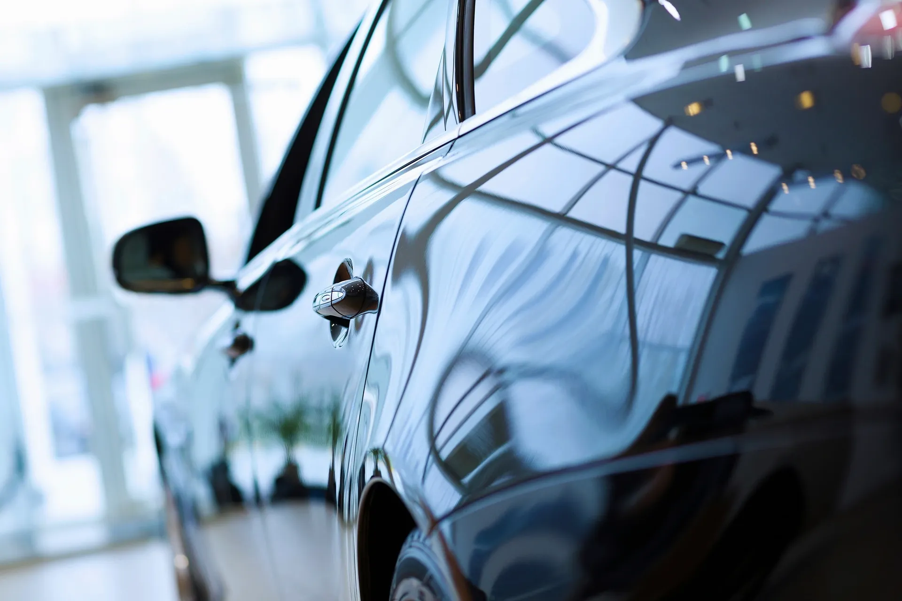
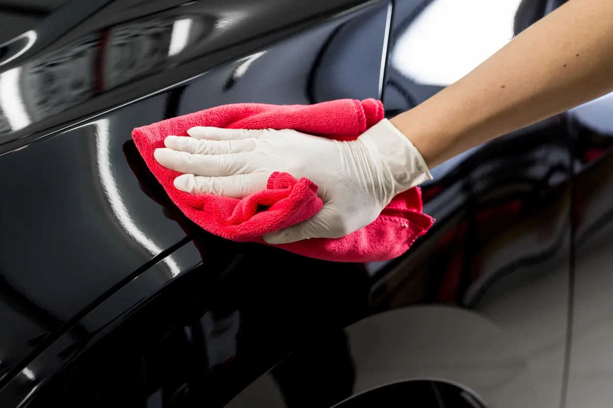
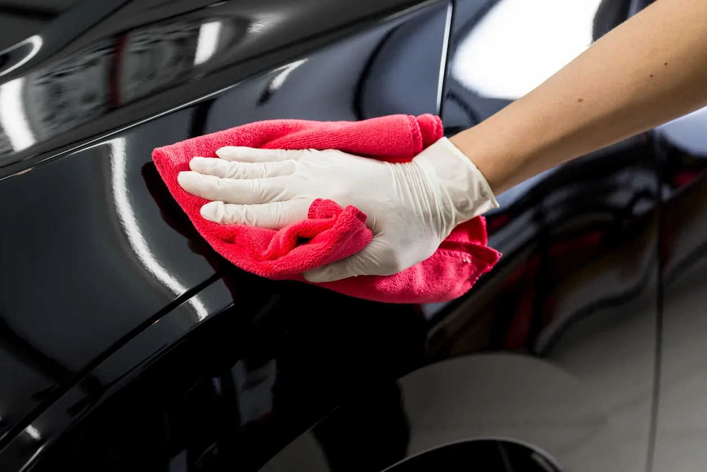
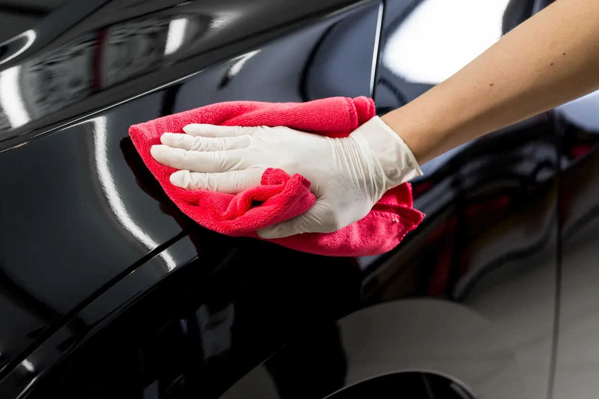
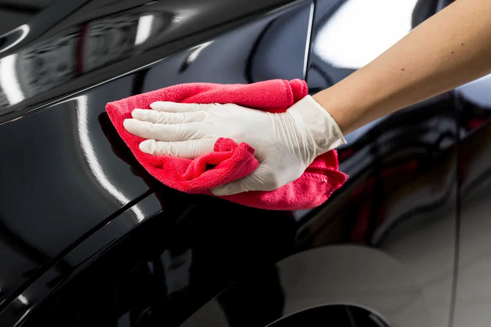

 



Знаем, че човек прекарва най-много време вътре в колата си. Затова, ние поемаме отговорността, това място да е безупречно. Правим го, чрез изпиране, детайлно почистване на всички повърхности, дезинфекция и подхранване.
За да се случи това, ние полагаме грижа и безкомпромисно качество, в почистване на двигателния отсек и върху лаковото покритие на Вашия автомобил, чрез цялостна корекция на лака или единичен панел.
Фаровете с едно от най-важните неща в един автомобил, както естетически, така и за безопасността на всички на пътя. Затова, ние предлагаме цялостно възстановяване на фарове, за да Ви е лъскаво и да Ви е мирна главата.
Доста хора избират да не поставят защитно покритие върху автомобила си, но по този начин оставят полираната повърхност на милостта на природата. Ние поставяме защита върху всичко изброено до тук - салон, лаково покритие и фарове.
Знаем, че човек прекарва най-много време вътре в колата си. Затова, ние поемаме отговорността, това място да е безупречно. Правим го, чрез изпиране, детайлно почистване на всички повърхности, дезинфекция и подхранване.
За да се случи това, ние полагаме грижа и безкомпромисно качество, в почистване на двигателния отсек и върху лаковото покритие на Вашия автомобил, чрез цялостна корекция на лака или единичен панел.
Фаровете с едно от най-важните неща в един автомобил, както естетически, така и за безопасността на всички на пътя. Затова, ние предлагаме цялостно възстановяване на фарове, за да Ви е лъскаво и да Ви е мирна главата.
Доста хора избират да не поставят защитно покритие върху автомобила си, но по този начин оставят полираната повърхност на милостта на природата. Ние поставяме защита върху всичко изброено до тук - салон, лаково покритие и фарове.
Включва: изпиране на меки повърхности(мокет, седалки и т.н), почистване на стелки, почистване на всички видове повърхности, пълна дезинфекция, поставяне на защита и подхранване.
Включва: отстраняване на всички нечистоти от лака/фара/стопа, възвръщане на блясъка чрез 3 стъпки, за оптимални резултати. Поставяне на UV покритие върху фаровете/стоповете, за дълг живот на блясъка.
Включва: отстраняване на всички нечистоти от лака, възвръщане на блясъка чрез 3 стъпки, за оптимални резултати. Корекция на фарове и стопове. Поставяне на защитно покритие.
Включва: детайлно почистване на интериор(1*), Корекция на лак на целият автомобил(3*). Ако изберете тази опция, получавате по 15% отстъпка от следващата услуга.
Включва: изпиране на меки повърхности(мокет, седалки и т.н), почистване на стелки, почистване на всички видове повърхности, пълна дезинфекция, поставяне на защита и подхранване.
Включва: отстраняване на всички нечистоти от лака/фара/стопа, възвръщане на блясъка чрез 3 стъпки, за оптимални резултати. Поставяне на UV покритие върху фаровете/стоповете, за дълг живот на блясъка.
Включва: отстраняване на всички нечистоти от лака, възвръщане на блясъка чрез 3 стъпки, за оптимални резултати. Корекция на фарове и стопове. Поставяне на защитно покритие.
Включва: детайлно почистване на интериор(1*), Корекция на лак на целият автомобил(3*). Ако изберете тази опция, получавате по 20% отстъпка от всяка следваща услуга.
За всеки направени 3 услуги, получавате 25% отстъпка за четвъртата.
Бул. Велики Преслав 17, Шумен 9701, Bulgaria
Email: driveandshinestudio@gmail.com
Телефон: +359 88 613 8486
| Пн | 09:00 - 17:00 |
|---|---|
| Вт | 09:00 - 17:00 |
| Ср | 09:00 - 17:00 |
| Чт | 09:00 - 17:00 |
| Пт | 09:00 - 17:00 |
| Сб | Затворено |
| Нд | Затворено |